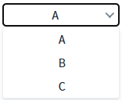
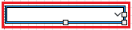
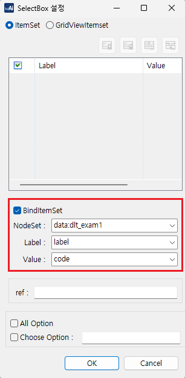

SelectBox의 목록과 DataList를 연결하여 항목을 표시한 예제입니다.
SelectBox 목록에 DataList 연결하기
setNodeSet 메소드로 DataList와 SelectBox 목록 연결하기
예제 영역 'SelectBox 목록에 DataList 연결하기'에서 테스트합니다.1
STEP 1: 실행 결과를 확인합니다.
SelectBox의 목록이 DataList와 연결된 것을 확인합니다.
'A','B','C' 항목이 표시됩니다.
Image 1.브라우저(Chrome) 실행 예시 - AutoComplete의 목록

예제 영역 'setNodeSet 메소드로 DataList와 SelectBox 목록 연결하기'에서 테스트합니다.1
STEP 1: 'setNodeSet 메소드로 DataList와 SelectBox 목록 연결하기' 버튼을 클릭합니다.
2
STEP 2: 실행 결과를 확인합니다.
SelectBox의 목록이 DataList와 연결된 것을 확인합니다.
'A','B','C' 항목이 표시됩니다.
Image 2.브라우저(Chrome) 실행 예시 - AutoComplete의 목록
1
STEP 1: 디자인 탭에서 컴포넌트 더블 클릭하기
WebSquare 스튜디오의 '디자인' 탭에서 SelectBox를 더블 클릭합니다.
Image 3.웹스퀘어 스튜디오의 '디자인' 탭 - 컴포넌트 선택 예시

2
STEP 2: NodeSet 설정하기
'SelectBox 설정 팝업' 창에서 'BindItemSet' 체크박스를 체크 후, 'NodeSet'에서 DataList를 선택합니다. 이후, Label, Value를 선택하고 'OK' 버튼을 클릭하여 설정창을 닫습니다.
Example 1.설정 예시
- NodeSet: data:dlt_exam1 - Label: label - Value: code
Image 4.웹스퀘어 스튜디오 예시

1
'setNodeSet' 메소드를 사용하여 SelectBox 목록과 DataList를 연결하는 스크립트를 작성합니다.
Example 2.Script
// SelectBox 'sbx_exam1'에 DataList 'dlt_exam1'을 연결합니다. sbx_exam1.setNodeSet("data:dlt_exam1", "label", "code");
setNodeSet